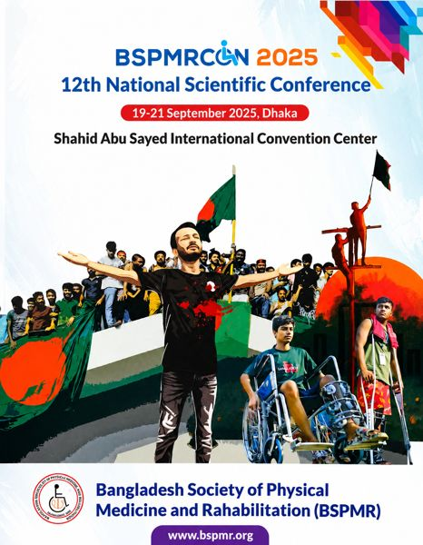
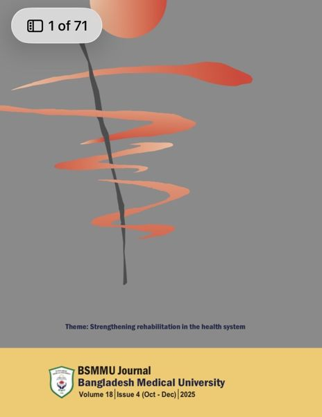
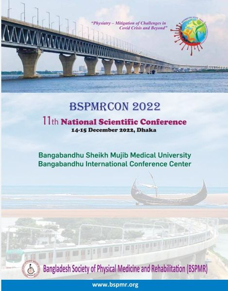

SouvenirFree
Souvenir BSPMRCON 2025
12th National Scientific Conference souvenir — keynote messages, conference proceedings, scientific abstracts, invited lectures and workshop details.
Read publicationConference souvenirs and special issues from BSPMR — free to read.

12th National Scientific Conference souvenir — keynote messages, conference proceedings, scientific abstracts, invited lectures and workshop details.
Read publication
BSMMU Journal special issue dedicated to strengthening rehabilitation services within the health system.
Read publication
11th National Scientific Conference — “Physiatry: Mitigation of Challenges in Covid Crisis and Beyond”.
Read publicationPeer-reviewed papers are published in BJPMR, our official journal.